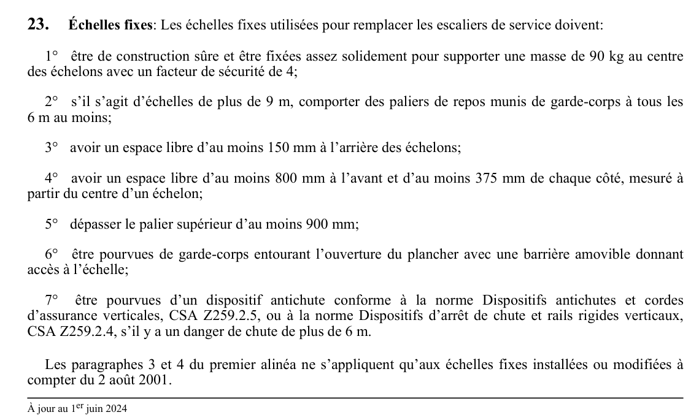

art-23-RSST : échelles fixes
Un article du wiki ⚖️ Recueil législatif
🌐 LegisQuébec · 📄 PDF officiel
Texte officiel : capture du PDF

Toucher l'image pour l'agrandir🔗 Voir art. 23 RSST dans le PDF (page 11) · texte à jour au 1er juin 2024
📚 Source légale : D. 885-2001, a. 23; D. 1411-2018, a. 11. · LégisQuébec
En bref
Échelles fixes: Les échelles fixes utilisées pour remplacer les escaliers de service doivent: 1° être de construction sûre et être fixées assez solidement pour supporter une masse de 90 kg au centre des échelons avec un facteur de sécurité de 4;
Voir aussi
Pages qui pointent ici (3)
- art-22.1-RSST : rampe Recueil législatif
- art-24-RSST : exception Recueil législatif
- RSST : Section 3 : Aménagement des lieux d'un établissement Recueil législatif